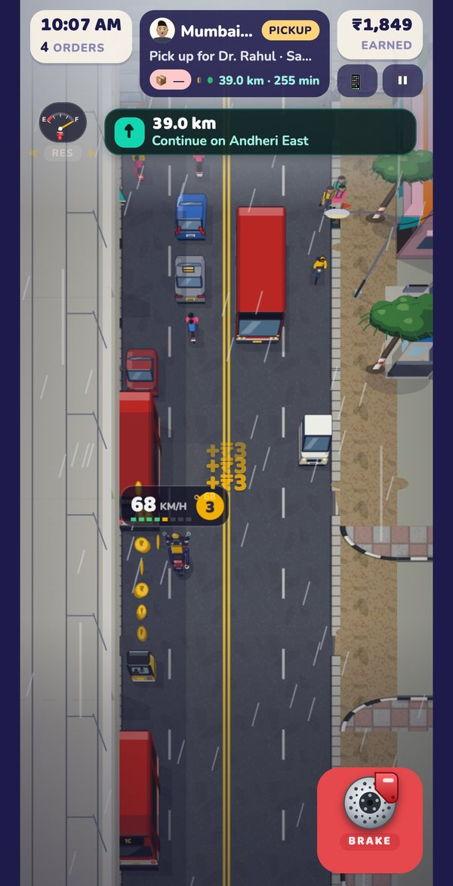
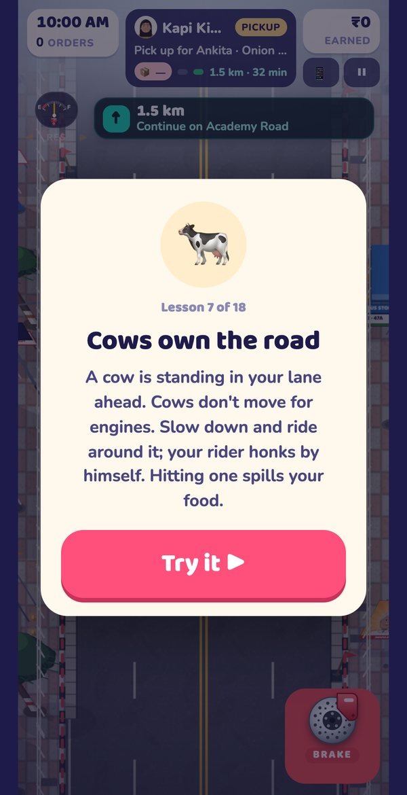
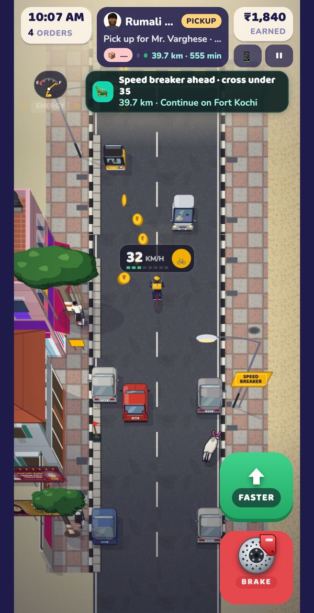
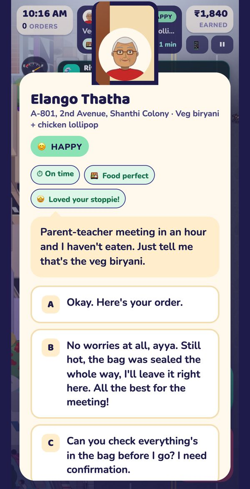
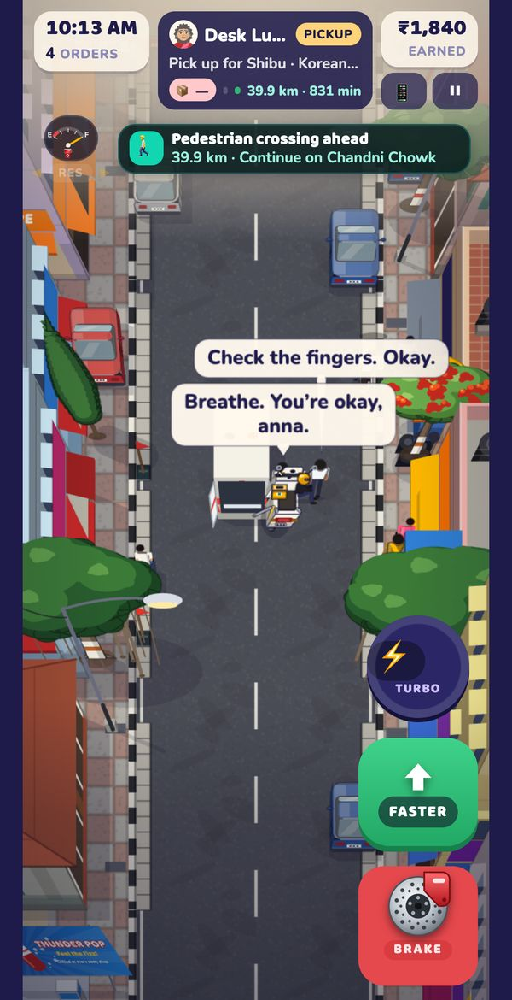
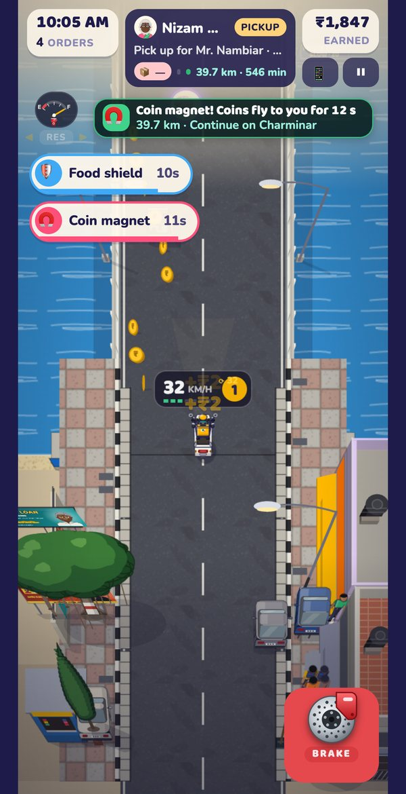
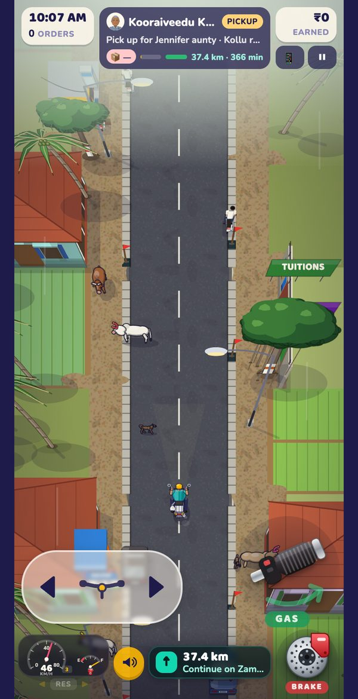
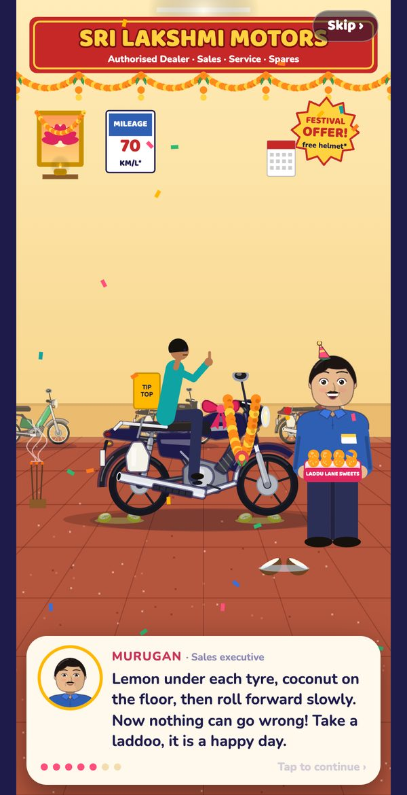
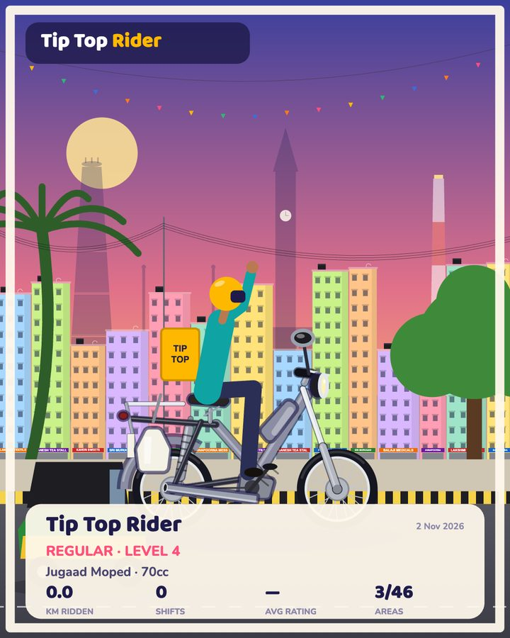

Every delivery is a little story
Hand-drawn Indian streets, real bikes (with parody names), and customers who remember you.
Ride real Indian roads
Cows that ignore your horn, autos cutting in, open drains, potholes, rain puddles, and speed breakers that throw you in the air if you hit them too fast.
Village to metro
Start in the Pollachi villages, then Coimbatore, Mysuru, Madurai, Kochi, Vizag, and up to Chennai, Bengaluru, Hyderabad, Pune, Mumbai and Delhi NCR.
Regulars who remember you
300+ customers and restaurants. Be polite, ride smooth, and strangers become family: bigger tips, faster parcels, free chai.
Buy your dream bike
42 bikes, from a ₹350 bicycle and a rattling moped to 10 adventure bikes and superbikes. Pay in full and do the lemon-and-coconut puja, or take an EMI and hope the recovery agent never visits.
Calls, cops and chaos
Customers ring you mid-ride, police check your helmet (run and they will catch you), superbike gangs blast past, and the jam gets so bad you squeeze through.
Photo shoot
Pose with your bike in front of Charminar, the Marina or the Coimbatore hills and share it with your friends.
New in version 1.4
The biggest update yet: easier controls, a practice street, stunts at the door and a lot more to ride.
Ride your way
Four control schemes: Follow finger (slide to steer, push forward to speed up), Thumb ring, Tilt or a two-thumb handlebar. A bigger BRAKE button, and the horn honks by itself.
Rider Academy
A quiet practice street with friendly lesson cards for speed, braking, reversing, squeezing through, U-turns, fuel and charging. Nothing can go wrong.
One-tap Style Park
Stop anywhere in the big green zone and walk the bag to the door, or tap STYLE PARK and drift or stoppie right onto the marker. Some customers cheer, some don't.
Push to fly, grab power-ups
Push your finger forward to speed up: the further you push, the harder you go, and the bike keeps the pace when you let go. Grab coin runs, a coin magnet, a food shield, extra time, a boost and Rider Sense.
Rider Sense
Your rider learns to steer around people, animals and traffic, and gets better with every shift.
Bicycles
A city roadster, a mountain bike and a road bike. Pedal power with an energy meter, no fuel, no police paperwork, and traffic gives you room.
10 adventure bikes
Tall, tough bikes that ride straight over potholes and speed breakers. Switch rides any time from My bikes in your garage.
Help is on the way
Took a few tumbles? A friendly ambulance crew patches you up and fixes your bike. Keep falling and they will have a word with you.
20 riding songs
Original tracks, 10 of them South Indian, with separate music and sound switches, a music volume and a traffic level from Light to Full.
Screenshots










Free. Really free.
The whole game is free for everyone, with nothing to buy and nothing to watch.
- 🚫 No ads, ever
- 🛒 No in-app purchases or subscriptions
- 💰 Every coin and bike is earned on the road
- 🔒 No tracking: your progress stays on your device
- 👨👩👧 Fun for all ages

Cities
Each city has its own landmarks, food and traffic. Bigger cities pay more, and fine more.